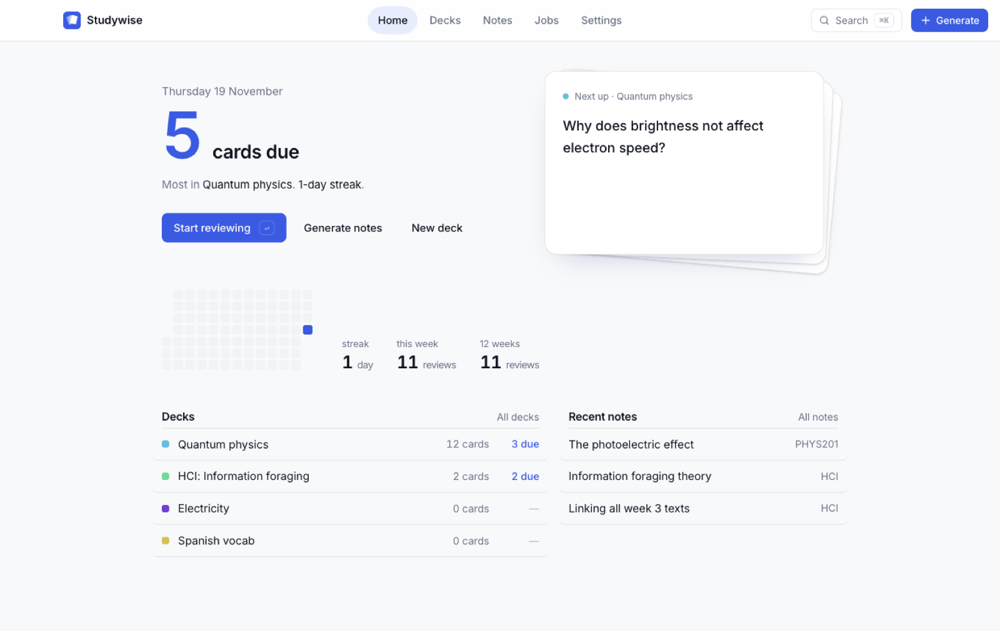
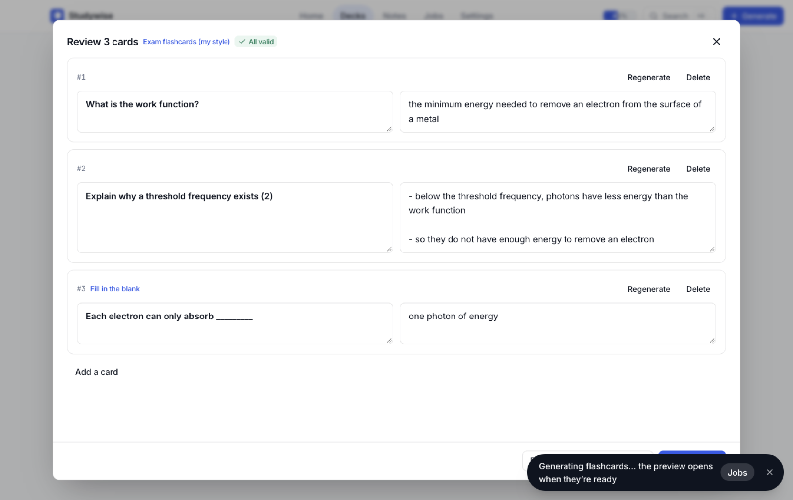
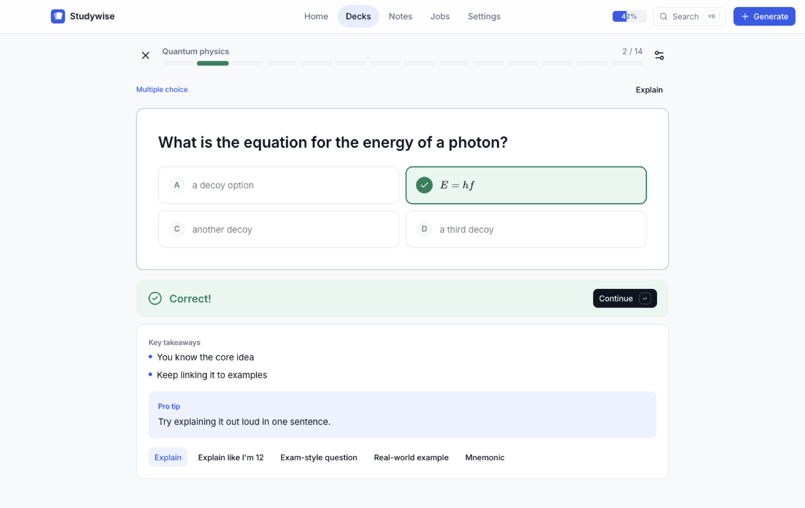
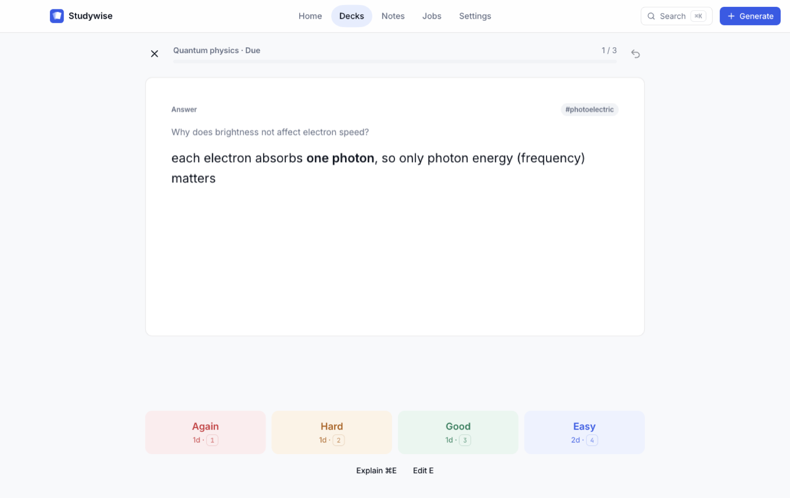

Turn your lecture PDFs into flashcards.
Studywise makes notes and flashcards from your lecture slides, then quizzes you and marks your answers.
Free. Needs a Claude account and Claude Code.

Notes from your slides
Drop in a PDF and get clear notes in a casual, exam-focused style. It reads the tables and diagrams too, not just the text.

Flashcards you can check
Cards come out in the StudySmarter text format. You get to review them, fix any that look wrong, and save the rest to a deck.

Learn mode
Each card turns into a question: multiple choice, true or false, fill in the blank, write your own answer, and more. Written answers get a mark out of 10.

Spaced repetition
Flip cards and rate them. Studywise works out when you should see each one again, and shows what's due each day.

Also
- Imports and exports StudySmarter .txt and .xlsx files
- Explain button on any card or note
- Edit every AI prompt, and pick which Claude model each task uses
- Lots of keyboard shortcuts. Press ? in the app to see them all
- Everything is stored on your computer
Setup
-
Install Claude Code and log in:
npm install -g @anthropic-ai/claude-code claude - Download Studywise and open it.
The app isn't signed yet. On a Mac, right-click it and pick Open the first time. On Windows, click More info, then Run anyway.
Studywise uses your own Claude account through Claude Code, under Anthropic's terms. It isn't affiliated with Anthropic or StudySmarter.